Crawler Crawler | Burrowborn | 24 | 14 | 1–3 | 4.7 | 3.6 | 0 | zone.c3_site_rig, The Drowned Cellar, zone.salt_pit_floor, zone.salt_pit_terraces, The Shallows |
 Scavenger Scavenger | The Castoffs | 30 | 35 | 2–6 | 5.0 | 2 | 0 | The Deep Survey, The Deep Survey · Floor 2, The Deep Survey · Floor 3, Frontier Road, The Shallows, The Saltpan, The Scarp, The Sump |
 Brood Brood | The Mutants | 45 | 40 | 3–8 | 6.7 | 3.4 | 1 | Excavation C-3, The Saltpan |
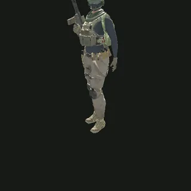 Castoff Lookout | The Castoffs | 50 | 55 | 3–8 | 2.9 | 2.3 | 1 | Excavation C-3, Castoff Hideout · Floor 1, Castoff Hideout · Floor 2, The Salt Pit |
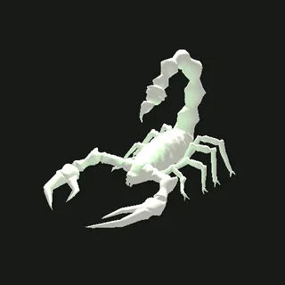 Brine Scorpion | Burrowborn | 65 | 45 | 3–8 | 5.0 | 3.1 | 2 | The Salt Pit |
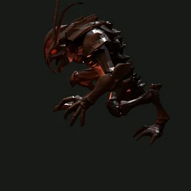 Red Mandible | Burrowborn | 70 | 45 | 3–8 | 6.4 | 3 | 2 | The Deep Survey, The Shallows |
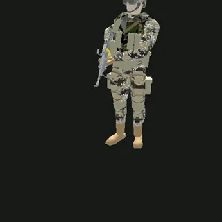 Castoff Raider | The Castoffs | 75 | 65 | 3–9 | 5.8 | 2.6 | 1 | Excavation C-3, zone.c3_site_upper, Castoff Hideout · Floor 1, Castoff Hideout · Floor 2, Castoff Hideout · Floor 3, zone.salt_pit_terraces |
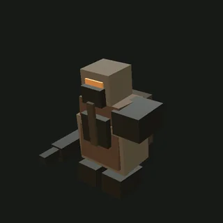 Excavation Enforcer | The Castoffs | 90 | 70 | 5–12 | 8.2 | 2.4 | 2 | The Deep Survey |
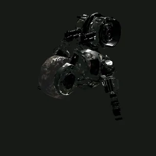 War Drone | The Rustbound | 90 | 100 | 8–18 | 4.2 | 3.2 | 1 | The Pump Works · Intake Hall, The Pump Works · Relay Gallery, The Sump |
 Acid Spitter Acid Spitter | The Mutants | 95 | 110 | 7–16 | 5.0 | 2.4 | 2 | zone.c3_site_lower, zone.c3_site_upper, The Saltpan |
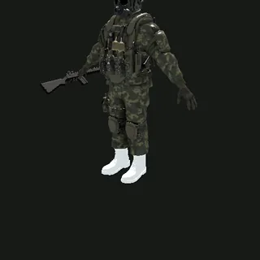 Castoff Gunner | The Castoffs | 120 | 110 | 6–14 | 4.6 | 2.2 | 2 | Excavation C-3, Castoff Hideout · Floor 2, Castoff Hideout · Floor 3, Castoff Hideout · Floor 4, The Salt Pit, zone.salt_pit_terraces |
 Zombine Miner Zombine Miner | The Mutants | 120 | 95 | 6–14 | 6.2 | 1.9 | 2 | zone.c3_site_upper, The Saltpan |
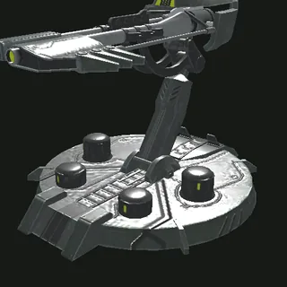 Sentry Turret | The Rustbound | 140 | 70 | 6–14 | 4.0 | 0.5 | 1 | Excavation C-3, zone.c3_site_lower, zone.c3_site_rig, The Pump Works · Relay Gallery, The Pump Works · Assembly Line, The Pump Works · Switchyard, The Salt Pit |
 Ripper Ripper | The Mutants | 150 | 120 | 8–18 | 8.5 | 2.8 | 2 | zone.c3_site_lower, The Saltpan |
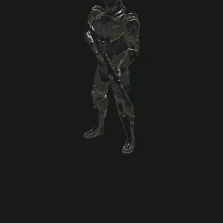 Castoff Trooper | The Castoffs | 180 | 170 | 10–22 | 6.7 | 2.4 | 3 | Castoff Hideout · Floor 3, Castoff Hideout · Floor 4 |
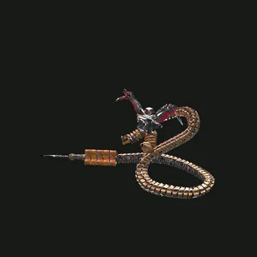 Millennium Bug | The Rustbound | 180 | 170 | 12–28 | 6.4 | 2.4 | 3 | zone.c3_site_lower, The Deep Survey · Floor 2, zone.salt_pit_floor |
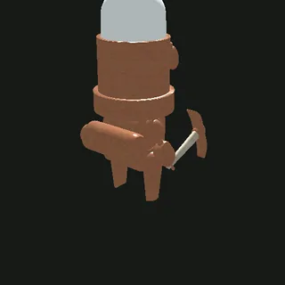 Miner Unit | The Rustbound | 220 | 150 | 12–30 | 5.5 | 1.5 | 1 | Excavation C-3, zone.c3_site_lower, zone.c3_site_rig, The Pump Works · Intake Hall, The Pump Works · Relay Gallery, The Pump Works · Assembly Line, The Salt Pit |
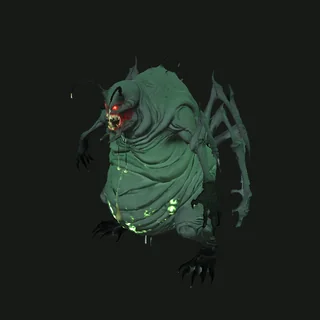 Ravager | Burrowborn | 240 | 120 | 10–25 | 5.0 | 1.8 | 3 | The Drowned Cellar, The Shallows |
 Tribal Bug Tribal Bug | The Mutants | 260 | 200 | 20–45 | 7.8 | 2.2 | 3 | The Saltpan |
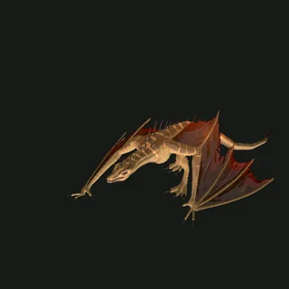 Dragon | The Wyrms | 280 | 220 | 30–60 | 4.0 | 3.4 | 4 | The Cinder Deep |
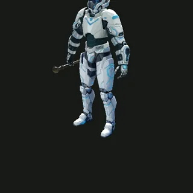 Castoff Vanguard | The Castoffs | 300 | 260 | 15–35 | 7.3 | 2.5 | 3 | Castoff Hideout · Floor 3, Castoff Hideout · Floor 4 |
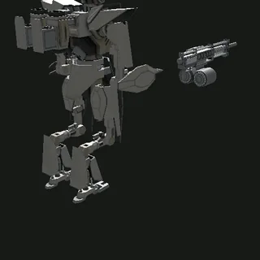 Haze Skirmisher | The Rustbound | 320 | 280 | 24–55 | 8.8 | 2.2 | 2 | zone.c3_site_rig, The Pump Works · Assembly Line |
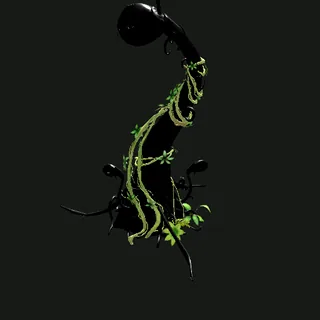 Sluice Maw | The Rustbound | 360 | 320 | 20–45 | 6.1 | 0.5 | 4 | Floodlands |
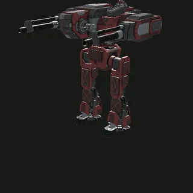 Pelter | The Rustbound | 380 | 320 | 30–70 | 6.0 | 1.3 | 2 | zone.c3_site_rig, The Pump Works · Assembly Line |
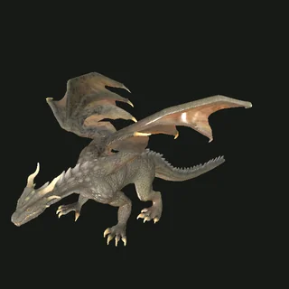 Greater Dragon | The Wyrms | 560 | 520 | 80–160 | 5.6 | 2.4 | 4 | The Cinder Deep |
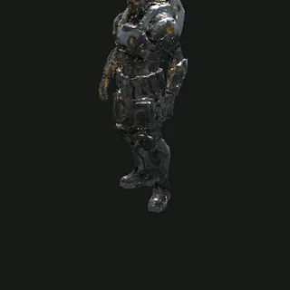 The Warlord | The Castoffs | 1,100 | 900 | 120–220 | 10.0 | 2.6 | 4 | Castoff Hideout · Floor 4 |
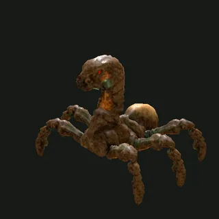 Pit Wyrm | Burrowborn | 1,300 | 1,000 | 120–240 | 9.4 | 2 | 4 | — |
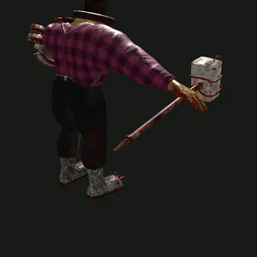 Chopper | The Rustbound | 1,600 | 1,800 | 200–400 | 11.2 | 2.6 | 4 | The Pump Works · Switchyard |